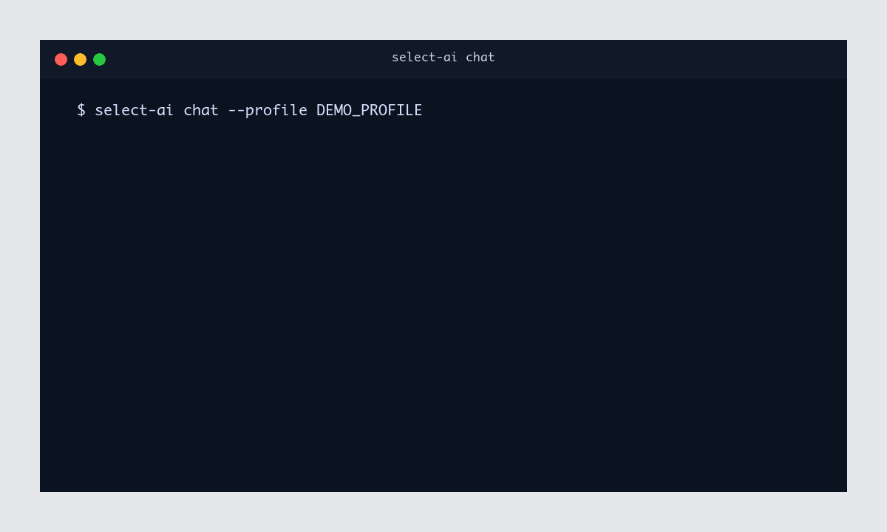

1. Command line interface¶
The select-ai command line interface (CLI) provides a terminal workflow for
using Select AI profiles without writing Python code. It is intended for quick
exploration, profile validation, prompt testing, SQL generation,
summarization, translation, and interactive chat against an existing profile.
The CLI is useful for developers who want a fast shell workflow and for non-developers who are comfortable running terminal commands but do not want to write Python code. It can help users check whether a profile is configured correctly, inspect generated SQL, try prompts during development, or interact with a curated profile through a simple command.
The CLI works with Select AI profiles and can also run the Select AI A2A server, clustered gateway and worker, and Agent Card generator. RAG is supported when the selected profile is already configured with a vector index. The A2A guide explains the difference between fixed and dynamic connections and standalone and clustered topologies; this page gives the corresponding CLI commands.


The package provides an optional select-ai command line tool. Install the
CLI extra to use profile, SQL, and chat commands. Install the separate a2a
extra for the A2A server and worker commands. If A2A dependencies are missing,
invoking the A2A command group or a server or worker command reports how to
install them; the other CLI commands remain available:
pip install 'select_ai[cli]'
# Install A2A support:
pip install 'select_ai[a2a]'
Use select-ai --help to view the available command groups and
select-ai <command> --help to view options for a specific command.
The A2A examples below pass database credentials with CLI options so the commands are easy to copy and adapt. Environment-variable equivalents are listed in the connection-options table.
1.1. Connection options¶
Database-backed commands accept the following connection options. The
select-ai a2a serve command accepts these options directly. In standalone
mode, providing all four connection values at startup selects the fixed
connection path; omitting values opens a dynamic A2UI form for them. In
clustered mode, the gateway can preconfigure any values and the form collects
the rest. The worker receives the resolved values when it opens a session.
For a private database CA, use --database-tls-ca-file; the CLI reads PEM
from the specified file.
Option |
Environment variable |
|---|---|
|
|
|
|
|
|
|
|
|
|
|
|
Profile, SQL, and chat commands prompt for the database password when neither
--password nor SELECT_AI_PASSWORD is set. For a2a serve, omitting
any connection value selects dynamic mode, and the A2A client supplies the
missing values through an A2UI form. Supply --dsn, --user,
--password, and --team for fixed standalone mode. Wallet options apply
to fixed standalone A2A connections; dynamic sessions do not currently
support Oracle wallet authentication. The A2A CLI examples below include a
host, port, service name, credentials, and optional database CA file.
1.2. Interactive chat¶
The chat subcommand starts an interactive profile chat
Read-Eval-Print Loop (REPL). A REPL is a terminal session that reads each
prompt you type, evaluates it, prints the response, and then waits for the next
prompt. Pass an existing Select AI profile with --profile:
select-ai chat --profile OCI_AI_PROFILE
The REPL uses Profile.chat_session() so prompts in the same terminal session
share conversation context. Responses stream by default. Use --no-stream to
print each response after it is fully generated.
Connected to Select AI profile: OCI_AI_PROFILE
Type /help for commands. Type /exit to quit.
select_ai> What tables can I ask about?
...
select_ai> /exit
Useful options:
--user,--password, and--dsnoverride the environment values.--wallet-locationand--wallet-passwordconfigure wallet connections.--chunk-sizecontrols the number of CLOB characters read per stream chunk.--conversation-lengthcontrols how many prompts are retained in context.--keep-conversationkeeps the database conversation after the REPL exits.
Inside the REPL, use these commands:
Command |
Description |
|---|---|
|
Show available REPL commands. |
|
Start a fresh database conversation. |
|
Exit the chat session. |
|
Exit the chat session. |
1.3. SQL commands¶
SQL operations are one-shot subcommands instead of a REPL:
select-ai sql show --profile OCI_AI_PROFILE "count movies by genre"
select-ai sql run --profile OCI_AI_PROFILE "count movies by genre"
select-ai sql explain --profile OCI_AI_PROFILE "count movies by genre"
select-ai sql narrate --profile OCI_AI_PROFILE "count movies by genre"
show, explain, and narrate stream text output by default. Use
--no-stream to print the response after it is fully generated, and
--chunk-size to control the number of CLOB characters read per stream
chunk.
run executes the generated SQL and prints the returned result table. It
does not support streaming.
1.4. Profile commands¶
Summarize and translate are available under the profile command group:
select-ai profile list
select-ai profile list --pattern "OCI.*"
select-ai profile summarize --profile OCI_AI_PROFILE "Text to summarize"
select-ai profile summarize --profile OCI_AI_PROFILE --file notes.txt
select-ai profile summarize \
--profile OCI_AI_PROFILE \
--location-uri https://example.com/article.txt
select-ai profile summarize \
--profile OCI_AI_PROFILE \
--location-uri https://objectstorage.example.com/n/namespace/b/bucket/o/file.txt \
--credential-name OBJECT_STORE_CRED
select-ai profile translate \
--profile OCI_AI_PROFILE \
--source-language English \
--target-language German \
"Thank you"
profile list prints profile names visible to the connected database user.
Use --pattern to filter names with a regular expression.
profile summarize accepts one content source at a time: inline text,
--file, or --location-uri. Use --prompt to guide the summary and
--credential-name when the location URI requires an object storage
credential.
1.5. A2A commands¶
The a2a command group exposes the cloud-neutral A2A runtimes. Use
select-ai a2a --help or a command-specific --help option to see the
current defaults:
select-ai a2a --help
select-ai a2a serve --help
select-ai a2a worker --help
select-ai a2a agent-card --help
Command |
Purpose |
|---|---|
|
Start the public A2A HTTP server. The default standalone topology needs
no worker or Consul. Add |
|
Start an internal database worker for clustered topology. Standalone topology does not use this command. |
|
Print a Gemini Enterprise-compatible A2A v0.3 Agent Card without starting a server. |
1.5.1. A2A deployment examples¶
The A2A guide explains how fixed and dynamic connections differ from standalone and clustered topologies. These examples use CLI options for the database settings. Replace the placeholder credentials and connection string with your values.
1.5.1.1. Fixed standalone connection¶
Pass all four connection values at startup to use the standalone server’s shared connection pool. This needs no Consul or worker and supports streaming:
select-ai a2a serve \
--deployment standalone \
--team ORACLE_AI_DATABASE_AGENT \
--user DB_USERNAME \
--password 'DB_PASSWORD' \
--dsn 'dbhost.example.com:1521/db_service' \
--database-tls-ca-file /run/secrets/database-ca.pem \
--database-call-timeout-seconds 120 \
--host 0.0.0.0 \
--port 8000 \
--public-url https://a2a.example.com
The database CA file is optional when the server certificate is already
trusted by the operating system. --wallet-location and
--wallet-password are also available for fixed standalone connections
that use an Oracle wallet.

1.5.1.2. Dynamic standalone connection¶
Omit one or more of --dsn, --user, --password, and --team to
have the A2A client supply those values through an A2UI form. The server runs
the session child processes itself, so this mode needs no Consul or separate
worker. Run a single Uvicorn process. Dynamic standalone supports task polling,
not streaming:
select-ai a2a serve \
--deployment standalone \
--database-tls-ca-file /run/secrets/database-ca.pem \
--host 0.0.0.0 \
--port 8000 \
--public-url https://a2a.example.com
Remove --database-tls-ca-file when the database server certificate is
already trusted by the operating system. Any connection values provided on
the command line are fixed; the form asks only for the values that are
missing.
1.5.1.3. Clustered gateway and worker¶
Clustered topology requires Consul and at least one worker. Consul is the
worker directory and session-routing service: it helps the gateway find a
healthy worker for a new session and send later requests back to that worker.
See Why clustered deployments use Consul for a worked
example. Point the gateway and all workers at the same Consul service with
--consul-url.
The gateway can run without database credentials; by default, the A2A client supplies them through the connection form. For local development, start Consul and then run the worker and gateway in separate terminals:
# Terminal 1: local development Consul agent
consul agent -dev -bind=127.0.0.1 -client=127.0.0.1
# Terminal 2: database worker
select-ai a2a worker \
--host 127.0.0.1 \
--port 8081 \
--consul-url http://127.0.0.1:8500 \
--worker-id local-worker \
--worker-endpoint http://127.0.0.1:8081 \
--database-call-timeout-seconds 120
# Terminal 3: public gateway
select-ai a2a serve \
--deployment clustered \
--host 127.0.0.1 \
--port 8000 \
--public-url http://127.0.0.1:8000 \
--consul-url http://127.0.0.1:8500 \
--database-tls-ca-file /run/secrets/database-ca.pem \
--database-call-timeout-seconds 120
The local Consul command is for development only. In a deployment, point the
gateway and workers at the existing Consul service and use network-reachable
worker addresses. The database CA option is needed only for a private database
CA; the gateway passes its PEM contents to the worker when opening a session.
Set the same --database-call-timeout-seconds value on the gateway and
worker. See the A2A guide for Consul setup and clustered deployment details.
Important serve options include --team, --host, --port,
--public-url, --description, --pool-max-size, and
--database-call-timeout-seconds. The default database call timeout is 120
seconds. On the clustered gateway, this value sets the request deadline basis;
the worker applies it to Oracle calls and derives its child-process deadline.
By default, a2a serve does not require an application OAuth token. A2A
task and context records use a shared owner scope, and each A2A context maps
to its own Select AI conversation. Add --require-oauth to require
Authorization: Bearer ... and derive an owner scope as well as context.
The SDK does not validate token signatures or claims. A trusted upstream
service must validate the end-user token and prevent direct access that
bypasses validation. See the A2A authentication contract.
The Agent Card advertises bearer security only in that mode.
1.5.1.4. Clustered option reference¶
Configure discovery first, then connection values and session limits. Explicit CLI values take precedence over environment fallbacks. For a fixed clustered connection, see the complete gateway command.
1.5.1.4.1. Gateway discovery¶
--public-url(PUBLIC_URL)Client-visible base URL advertised in the Agent Card.
--consul-url(CONSUL_HTTP_URL)Consul HTTP API URL. Use the same Consul service as the workers.
--worker-service(WORKER_SERVICE)Consul service to discover. Default:
select-ai-a2a-worker.
1.5.1.4.2. Worker registration¶
--hostand--portWorker listen address and port. The port is also registered with Consul.
--worker-id(WORKER_ID)Unique worker identifier. Defaults to the host name.
--consul-url(CONSUL_HTTP_URL)Consul HTTP API URL used to register the worker and send heartbeats.
--worker-endpoint(WORKER_ENDPOINT)Worker URL reachable by the gateway. In cluster manifests,
WORKER_ADDRESScan supply the pod IP when no endpoint is given.
1.5.1.4.3. Connection values and forms¶
--dsn,--user,--password, and--team(gateway)Fix the supplied values at startup. Set all four for a fixed connection; otherwise the A2UI form asks only for the missing values. The environment fallbacks are
SELECT_AI_DB_CONNECT_STRING,SELECT_AI_USER,SELECT_AI_PASSWORD, andSELECT_AI_A2A_TEAM.--a2ui-form(gateway)Path to a custom A2UI JSON form. It must submit exactly the missing connection values. See A2A Integration for the form contract.
1.5.1.4.4. Session lifetime and timeouts¶
--session-ttl-seconds(gateway and worker)Lifetime of a temporary database session; default 900 seconds. The gateway also reads
SESSION_TTL_SECONDS. Configure the same lifetime on both processes.--conversation-retention-days(worker)Days to retain Oracle conversations; default 7. Environment fallback:
CONVERSATION_RETENTION_DAYS. Use 0 to retain until manually deleted.--session-start-timeout-seconds(worker)Maximum wait for a child process to initialize its database session.
--database-call-timeout-seconds(gateway and worker)Database call timeout; default 120 seconds. Set the same value on both processes. The worker applies it to Oracle calls; both processes derive their request deadlines from it.
1.5.1.4.5. Authentication and TLS¶
--require-oauth(gateway)Require a bearer token and derive an owner scope for task and context records. Token validation must occur upstream. Uses the same ownership behavior as standalone mode.
--tls-cert-fileand--tls-key-file(gateway)Enable HTTPS on the public A2A listener. Supply both together; without them, the listener uses HTTP.
--tls-ca-file(gateway)Optional CA that makes the public listener require and verify client certificates (mTLS). Requires
--tls-cert-fileand--tls-key-file.--worker-tls-ca-file,--worker-tls-cert-file,--worker-tls-key-fileGateway TLS options for worker connections. The CA verifies the worker’s server certificate; it can be supplied alone for HTTPS without mTLS. If omitted, Requests uses its default CA bundle. The client certificate and key are optional, but must be supplied together; the worker must require and trust them for mTLS. When any
--worker-tls-*option is used, set--worker-endpointto an HTTPS URL. Environment fallbacks areWORKER_TLS_CA_FILE,WORKER_TLS_CERT_FILE, andWORKER_TLS_KEY_FILE.--tls-ca-file,--tls-cert-file,--tls-key-file(worker)The certificate and key enable HTTPS on the worker and must be supplied together.
--tls-ca-fileis optional; when supplied, the worker requires and verifies client certificates for mTLS. Set--worker-endpointto an HTTPS URL so the gateway connects over TLS.--database-tls-ca-file(gateway)CA for verifying the Oracle database certificate. The gateway passes the PEM contents to the worker session. This is separate from the certificates for the gateway-to-worker HTTP connection and from Oracle wallet mTLS.
1.5.2. Agent Card generation¶
Print the portable A2A v0.3 card for a standalone public service:
select-ai a2a agent-card \
--team ORACLE_AI_DATABASE_AGENT \
--public-url https://a2a.example.com
--team and --public-url are required; use --description to replace
the default description. See A2A Integration for protocol
compatibility, persistent state, gateway session behavior, wallet support, and
Google Cloud deployment details.
1.6. Command summary¶
Command |
Purpose |
|---|---|
|
Start an interactive context-aware chat session. |
|
Generate SQL without executing it. |
|
Generate SQL, execute it, and print the result table. |
|
Explain generated SQL. |
|
Generate and execute SQL, then return a natural language answer. |
|
List saved profile names. |
|
Summarize inline content, a file, or a URI. |
|
Translate text with a saved profile. |
|
Start the public A2A server. The default is standalone; use
|
|
Start a database worker for clustered topology. Standalone deployments do not use a worker. |
|
Print an A2A v0.3 Agent Card. |